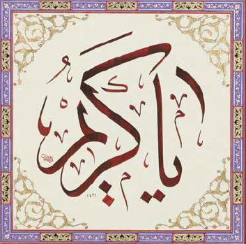
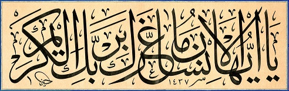

Kuran'da geçmediği halde, ezanlarla birlikte her vakit göğe yükselen şu muhteşem ifade:
Birinci güzel isim el-Kebîr aynı kökten türemiş:
40:12
fel-hukmu lillâhil-’aliyyil-kebîr
Hüküm yüce ve büyük olan Allah'a aittir
Kebîr, esmâ-i hüsnâdan biri olarak “zâtının ve sıfatlarının mahiyeti bilinemeyecek kadar ulu” şeklinde tanımlanır. Kur'ân-ı Kerîm'de kiber kavramı on dokuz âyette Allah'ın zâtına veya sıfatlarına nisbet edilmektedir. Bunların altısı kebîr, biri mütekebbir, biri “azamet, yücelik ve hükümranlık” anlamındaki kibriyâ kelimesidir. “Büyük, daha büyük, yegâne büyük” mânasına gelen ve Allah'a nisbet edilen ekber Kuran'da halk, rızâ, makt gibi sıfatlarla bağlantılı olarak beş âyette yer alır.
Kaynak: İslam Ansiklopedisi
İkinci isim Kerîm, insanlara da yakışan güzel bir sıfat: 
İnsanı titreten, çarpıcı bir soruda kullanılmış: 
82:6
yâ eyyuhel-insânu mâ ġarrake birabbikel-kerîm
Ey insan, Kerîm Rabbine karşı seni aldatan nedir?
Gazzâlî'nin Kerîm ismiyle ilgili olarak kaydettiği mânalar bu konuda söylenenlerin en kapsamlısıdır: “Kerîm, muktedirken affeden, vaadini yerine getiren, lutfunu umulanın ötesinde gerçekleştiren, kime ne kadar lutufta bulunduğunun hesabını yapmayan, kendisinden başkasına başvurulmasına rızâ göstermeyen, vefasızlığa sitemle mukabelede bulunup dostluğu bozacak bir karşılık vermeyen, kendisine sığınanı yüzüstü bırakmayan, aracı ve şefaatçilere muhtaç kılmayandır.”
Kaynak: İslam Ansiklopedisi